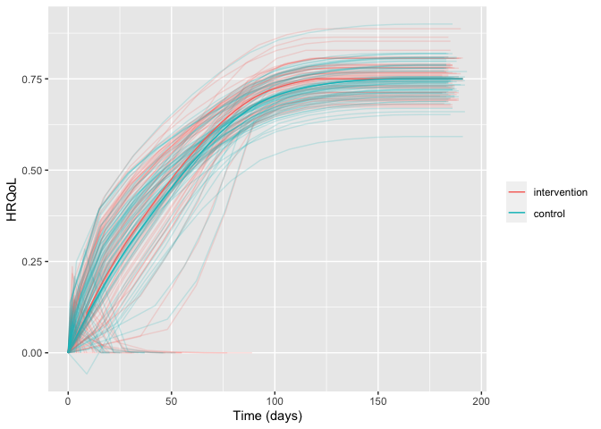

Package for simulating two-arm randomised clinical trials with temporal trajectories of health-related quality of life (HRQoL) as the outcome and quantifies effect sizes as single-sampled HRQoL values at end of follow-up and as the area under the trajectories.
Developed as part of the INCEPT (Intensive Care Platform Trial) project (https://incept.dk/), which is primarily supported by a grant from Sygeforsikringen “danmark” (https://www.sygeforsikring.dk/).
Resources
- Website - stand-alone website with full package documentation
-
Health-related quality of life trajectories in critical illness: protocol for a Monte Carlo simulation study - article in Acta Anaesthesiologica Scandinavica outlining the first scientific study to use
hrqolr
Installation
The easiest way is to install from CRAN directly:
install.packages("hrqolr")You can also install the development version from directly from GitHub. Doing this requires the remotes-package installed. The development version may contain additional features not yet available in the stable CRAN version, but may be unstable or lack documentation.
# install.packages("remotes")
remotes::install_github("INCEPTdk/hrqolr@dev")Example
hrqolr was built to simulate many scenarios.
library(hrqolr)
#> Loading 'hrqolr' package v0.1.0.
#> For help, run 'help("hrqolr")' or
#> check out https://inceptdk.github.io/hrqolr/.
#> Consider running 'cache_hrqolr()' for faster simulations.
#> If you have enough RAM, consider increasing the cache size;
#> run '?cache_hrqolr' for details.
cache_hrqolr()
scenario <- list(
n_trials = 100L,
n_patients_per_arm = 100L,
start_hrqol_ctrl = 0.1,
final_hrqol_ctrl = 0.75,
relative_improvement_final_hrqol_actv = 0.0,
sampling_frequency = 14L,
acceleration_hrqol_actv = 0.1,
mortality_ctrl = 0.4,
relative_mortality_reduction_actv = 0.0,
mortality_dampening = 0.0,
mortality_trajectory_shape = "exp_decay",
prop_mortality_benefitters_actv = 0.0,
n_digits = 3,
n_patients_ground_truth = 1000L,
n_example_trajectories_per_arm = 100L
)
example_trajs <- do.call(sample_example_trajectories, scenario)
example_trajs
#> $arm_level
#> arm x y
#> 1: intervention 0.000000 0.0000000
#> 2: intervention 9.000000 0.1000000
#> 3: intervention 9.007835 0.1100861
#> 4: intervention 9.022878 0.1102224
#> 5: intervention 9.045034 0.1104414
#> ---
#> 594: control 190.582005 0.7500000
#> 595: control 190.748687 0.7500000
#> 596: control 190.874375 0.7500000
#> 597: control 190.958377 0.7500000
#> 598: control 191.000000 0.7500000
#>
#> $patient_level
#> arm id x y
#> 1: intervention 1 0 0.000
#> 2: intervention 1 3 0.156
#> 3: intervention 1 4 0.000
#> 4: intervention 2 0 0.000
#> 5: intervention 2 10 NA
#> ---
#> 2038: control 199 189 0.756
#> 2039: control 200 0 0.000
#> 2040: control 200 2 0.059
#> 2041: control 200 16 0.000
#> 2042: control 200 20 0.000
#>
#> attr(,"class")
#> [1] "hrqolr_trajectories" "list"Visualise trajectories
plot(example_trajs)
You might also want to break apart the trajectories in the arms. Hiding the legend, then, makes sense as the facet strips will already provide the same information. Here, we also set the arm-level trajectory in black to set it apart from the individual patient trajectories:
library(ggplot2)
plot(example_trajs, arm_aes = list(colour = "black")) +
facet_wrap(~ arm) +
theme(legend.position = "none")
Of course, we might also be interested in summarising the trajectories. Here, for example, with inter-quartile range. Note that the ribbons become a bit wonky at end of follow-up because there are increasingly few observations, and some of them may be low because, e.g., mortality benefitters are still alive.

The same scenario specification can, then, be used to simulate a desired number of trials:
sims <- do.call(simulate_trials, scenario)
#> 2023-09-29 22:32:13: STARTING BATCH 1 (0 secs)
#> 2023-09-29 22:32:13: Estimating ground truth of arm actv (0.01 secs)
#> 2023-09-29 22:32:26: Finished actv arm in batch (12.12 secs)
#> 2023-09-29 22:32:26: Estimating ground truth of arm ctrl (12.12 secs)
#> 2023-09-29 22:32:37: Finished ctrl arm in batch (11.45 secs)
#> 2023-09-29 22:32:37: Finished batch (11.78 secs)
#> 2023-09-29 22:32:38: Combining data into final return struct (24.07 secs)
#> 2023-09-29 22:32:38: Wrapping up, returning output (24.1 secs)
sims
#> $summary_stats
#> outcome arm mean p25
#> 1: surv__primary__hrqol_at_eof__mean intervention 0.5363629 0.5180439
#> 2: surv__primary__hrqol_at_eof__mean control 0.5436186 0.5250157
#> 3: surv__primary__hrqol_auc__mean intervention 78.6739450 75.7291399
#> 4: surv__primary__hrqol_auc__mean control 78.1052664 75.1811988
#> 5: surv__secondary1__hrqol_at_eof__mean intervention 0.6361485 0.6137020
#> 6: surv__secondary1__hrqol_at_eof__mean control 0.6447538 0.6219722
#> 7: surv__secondary1__hrqol_auc__mean intervention 93.1917532 90.1781333
#> 8: surv__secondary1__hrqol_auc__mean control 92.3883222 89.3774531
#> 9: surv__secondary2__hrqol_at_eof__mean intervention 0.7347596 0.7309086
#> 10: surv__secondary2__hrqol_at_eof__mean control 0.7446996 0.7407697
#> 11: surv__secondary2__hrqol_auc__mean intervention 100.8029468 100.0206638
#> 12: surv__secondary2__hrqol_auc__mean control 100.3282820 99.5402182
#> 13: all__primary__hrqol_at_eof__mean intervention 0.4349474 0.4038075
#> 14: all__primary__hrqol_at_eof__mean control 0.4408314 0.4093075
#> 15: all__primary__hrqol_auc__mean intervention 63.8011554 59.4058002
#> 16: all__primary__hrqol_auc__mean control 63.3397780 58.9523711
#> 17: all__secondary1__hrqol_at_eof__mean intervention 0.4350250 0.4038075
#> 18: all__secondary1__hrqol_at_eof__mean control 0.4409100 0.4093075
#> 19: all__secondary1__hrqol_auc__mean intervention 63.7307650 59.3082761
#> 20: all__secondary1__hrqol_auc__mean control 63.1810940 58.7902536
#> 21: all__secondary2__hrqol_at_eof__mean intervention 0.4350250 0.4038075
#> 22: all__secondary2__hrqol_at_eof__mean control 0.4409100 0.4093075
#> 23: all__secondary2__hrqol_auc__mean intervention 59.6803108 55.1923682
#> 24: all__secondary2__hrqol_auc__mean control 59.3992286 54.9363650
#> outcome arm mean p25
#> p50 p75 sd se
#> 1: 0.5378694 0.5649285 0.038368805 0.0038368805
#> 2: 0.5451308 0.5725293 0.038875801 0.0038875801
#> 3: 78.7370355 82.5499391 5.640287968 0.5640287968
#> 4: 78.1600141 81.9473627 5.598226080 0.5598226080
#> 5: 0.6381614 0.6555895 0.030252419 0.0030252419
#> 6: 0.6467935 0.6643916 0.030636807 0.0030636807
#> 7: 93.0348663 95.8695896 4.536845003 0.4536845003
#> 8: 92.2908923 95.0342591 4.499531724 0.4499531724
#> 9: 0.7350565 0.7398001 0.008325213 0.0008325213
#> 10: 0.7450565 0.7498001 0.008391762 0.0008391762
#> 11: 100.9365647 101.6080603 1.260308655 0.1260308655
#> 12: 100.4613556 101.1290890 1.255960397 0.1255960397
#> 13: 0.4350900 0.4636600 0.036942242 0.0036942242
#> 14: 0.4409900 0.4698900 0.037436543 0.0037436543
#> 15: 63.8060768 68.0960443 5.461966473 0.5461966473
#> 16: 63.3256063 67.5938003 5.419147247 0.5419147247
#> 17: 0.4350900 0.4636600 0.036813658 0.0036813658
#> 18: 0.4409900 0.4698900 0.037306248 0.0037306248
#> 19: 63.6956264 68.0591989 5.460269005 0.5460269005
#> 20: 63.1506977 67.4808441 5.411327893 0.5411327893
#> 21: 0.4350900 0.4636600 0.036813658 0.0036813658
#> 22: 0.4409900 0.4698900 0.037306248 0.0037306248
#> 23: 59.6927726 63.7065086 5.044316436 0.5044316436
#> 24: 59.4120469 63.4006617 5.020074136 0.5020074136
#> p50 p75 sd se
#>
#> $comparisons
#> outcome mean mean_ground_truth sd
#> 1: surv__primary__hrqol_at_eof -0.007255676 -0.032463362 5.102650e-04
#> 2: surv__primary__hrqol_auc 0.568678594 -3.427828929 5.062304e-02
#> 3: surv__secondary1__hrqol_at_eof -0.008605298 -0.014425307 3.897969e-04
#> 4: surv__secondary1__hrqol_auc 0.803430982 -0.475974463 4.511705e-02
#> 5: surv__secondary2__hrqol_at_eof -0.009940054 -0.007674645 9.296047e-05
#> 6: surv__secondary2__hrqol_auc 0.474664850 0.150302836 1.750253e-02
#> 7: all__primary__hrqol_at_eof -0.005884000 -0.031188000 4.965985e-04
#> 8: all__primary__hrqol_auc 0.461377320 -3.484177734 4.842485e-02
#> 9: all__secondary1__hrqol_at_eof -0.005885000 -0.030474000 4.948982e-04
#> 10: all__secondary1__hrqol_auc 0.549671032 -3.307522503 5.180743e-02
#> 11: all__secondary2__hrqol_at_eof -0.005885000 -0.030474000 4.948982e-04
#> 12: all__secondary2__hrqol_auc 0.281082149 -3.430510836 2.619489e-02
#> se bias bias_corrected_coverage
#> 1: 5.102650e-05 0.025207687 1
#> 2: 5.062304e-03 3.996507524 1
#> 3: 3.897969e-05 0.005820009 1
#> 4: 4.511705e-03 1.279405446 1
#> 5: 9.296047e-06 -0.002265409 1
#> 6: 1.750253e-03 0.324362015 1
#> 7: 4.965985e-05 0.025304000 1
#> 8: 4.842485e-03 3.945555054 1
#> 9: 4.948982e-05 0.024589000 1
#> 10: 5.180743e-03 3.857193535 1
#> 11: 4.948982e-05 0.024589000 1
#> 12: 2.619489e-03 3.711592986 1
#> bias_corrected_coverage_se bias_se coverage coverage_se mse
#> 1: 0 5.102650e-05 1 0 6.356852e-04
#> 2: 0 5.062304e-03 1 0 1.597461e+01
#> 3: 0 3.897969e-05 1 0 3.402292e-05
#> 4: 0 4.511705e-03 1 0 1.638893e+00
#> 5: 0 9.296047e-06 1 0 5.140631e-06
#> 6: 0 1.750253e-03 1 0 1.055140e-01
#> 7: 0 4.965985e-05 1 0 6.405366e-04
#> 8: 0 4.842485e-03 1 0 1.556973e+01
#> 9: 0 4.948982e-05 1 0 6.048614e-04
#> 10: 0 5.180743e-03 1 0 1.488060e+01
#> 11: 0 4.948982e-05 1 0 6.048614e-04
#> 12: 0 2.619489e-03 1 0 1.377660e+01
#> mse_se n_sim p25 p50 p75
#> 1: 2.581155e-06 100 -0.007597533 -0.007272727 -0.006971836
#> 2: 4.033858e-02 100 0.541569003 0.569016907 0.605626993
#> 3: 4.528374e-07 100 -0.008873239 -0.008642506 -0.008326923
#> 4: 1.153228e-02 100 0.776209726 0.803571104 0.831226660
#> 5: 4.105549e-08 100 -0.010000000 -0.010000000 -0.009841270
#> 6: 1.121230e-03 100 0.464162632 0.476716450 0.486870779
#> 7: 2.519071e-06 100 -0.006300000 -0.005900000 -0.005500000
#> 8: 3.815105e-02 100 0.430383558 0.466298588 0.501366554
#> 9: 2.439440e-06 100 -0.006300000 -0.005900000 -0.005500000
#> 10: 3.988587e-02 100 0.521086035 0.551357547 0.592534980
#> 11: 2.439440e-06 100 -0.006300000 -0.005900000 -0.005500000
#> 12: 1.942701e-02 100 0.264706686 0.282819463 0.300313246
#> rejection_proportion rejection_proportion_se relative_bias relative_bias_se
#> 1: 0 0 -0.7764965 0.0015718181
#> 2: 0 0 -1.1659005 0.0014768253
#> 3: 0 0 -0.4034582 0.0027021740
#> 4: 0 0 -2.6879708 0.0094788803
#> 5: 0 0 0.2951809 0.0012112673
#> 6: 0 0 2.1580565 0.0116448438
#> 7: 0 0 -0.8113377 0.0015922744
#> 8: 0 0 -1.1324207 0.0013898502
#> 9: 0 0 -0.8068846 0.0016240015
#> 10: 0 0 -1.1661881 0.0015663515
#> 11: 0 0 -0.8068846 0.0016240015
#> 12: 0 0 -1.0819359 0.0007635858
#>
#> $args
#> $args$n_trials
#> [1] 100
#>
#> $args$n_patients_per_arm
#> [1] 100
#>
#> $args$start_hrqol_ctrl
#> [1] 0.1
#>
#> $args$final_hrqol_ctrl
#> [1] 0.75
#>
#> $args$relative_improvement_start_hrqol_actv
#> [1] 0
#>
#> $args$relative_improvement_final_hrqol_actv
#> [1] 0
#>
#> $args$sampling_frequency
#> [1] 14
#>
#> $args$acceleration_hrqol_actv
#> [1] 0.1
#>
#> $args$mortality_ctrl
#> [1] 0.4
#>
#> $args$relative_mortality_reduction_actv
#> [1] 0
#>
#> $args$mortality_dampening
#> [1] 0
#>
#> $args$mortality_trajectory_shape
#> [1] "exp_decay"
#>
#> $args$prop_mortality_benefitters_actv
#> [1] 0
#>
#> $args$verbose
#> [1] TRUE
#>
#> $args$n_digits
#> [1] 3
#>
#> $args$seed
#> [1] 1028563912
#>
#> $args$n_patients_ground_truth
#> [1] 1000
#>
#> $args$n_example_trajectories_per_arm
#> [1] 100
#>
#> $args$...
#>
#>
#>
#> $elapsed_time
#> Time difference of 24.10509 secs
#>
#> $example_trajectories
#> $arm_level
#> arm x y
#> 1: intervention 0.00000 0.0000000
#> 2: intervention 12.00000 0.1000000
#> 3: intervention 12.00827 0.1100856
#> 4: intervention 12.02421 0.1102203
#> 5: intervention 12.04771 0.1104366
#> ---
#> 594: control 179.62914 0.7500000
#> 595: control 179.77697 0.7500000
#> 596: control 179.88847 0.7500000
#> 597: control 179.96301 0.7500000
#> 598: control 180.00000 0.7500000
#>
#> $patient_level
#> arm id x y
#> 1: intervention 1 0 0.0000000
#> 2: intervention 1 2 0.0740000
#> 3: intervention 1 16 0.3145785
#> 4: intervention 1 30 0.4242271
#> 5: intervention 1 44 0.5026606
#> ---
#> 1915: control 200 134 0.7298478
#> 1916: control 200 148 0.7360000
#> 1917: control 200 162 0.7380000
#> 1918: control 200 176 0.7380000
#> 1919: control 200 190 0.7380000
#>
#> attr(,"class")
#> [1] "hrqolr_trajectories" "list"
#>
#> attr(,"class")
#> [1] "hrqolr_results" "list"Issues and enhancements
We use the GitHub issue tracker for all bug/issue reports and proposals for enhancements.
Contributing
We welcome contributions directly to the code to improve performance as well as new functionality. For the latter, please first explain and motivate it in an issue.
Changes to the code base should follow these steps:
- Fork the repository
- Make a branch with an appropriate name in your fork
- Implement changes in your fork, make sure it passes R CMD check (with neither errors, warnings, nor notes) and add a bullet at the top of NEWS.md with a short description of the change, your GitHub handle and the id of the pull request implementing the change (check the
NEWS.mdfile to see the formatting) - Create a pull request into the
devbranch ofadaptr
Citation
If using the package, please consider citing it:
citation(package = "hrqolr")
#> To cite package 'hrqolr' in publications use:
#>
#> it Ww (2023). _hrqolr: What the Package Does (Title Case)_. R package
#> version 0.1.0, <https://epiben.github.io/hrqolr/>.
#>
#> A BibTeX entry for LaTeX users is
#>
#> @Manual{,
#> title = {hrqolr: What the Package Does (Title Case)},
#> author = {Who wrote it},
#> year = {2023},
#> note = {R package version 0.1.0},
#> url = {https://epiben.github.io/hrqolr/},
#> }
#>
#> ATTENTION: This citation information has been auto-generated from the
#> package DESCRIPTION file and may need manual editing, see
#> 'help("citation")'.